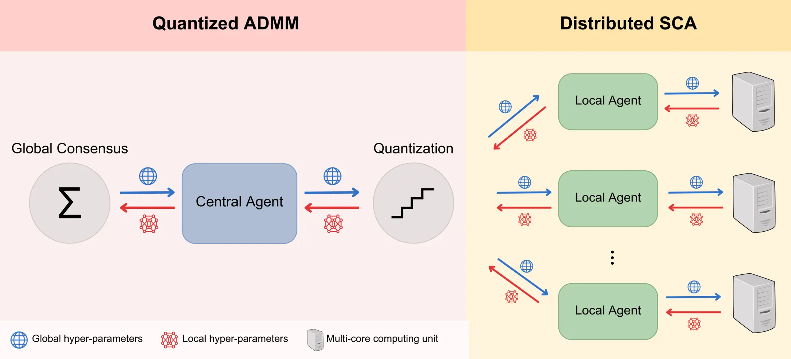
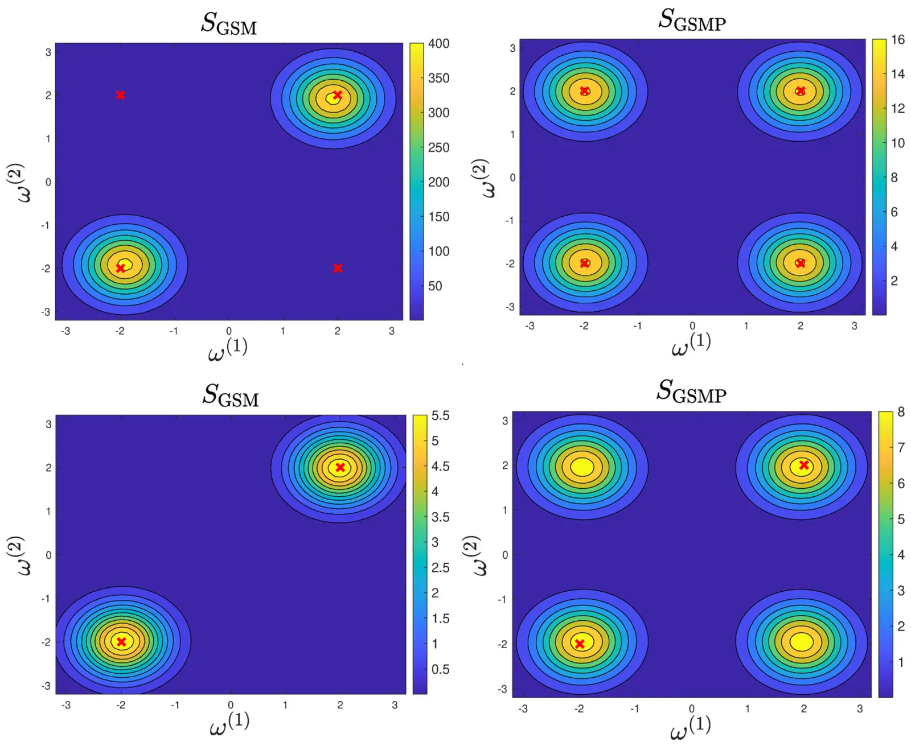
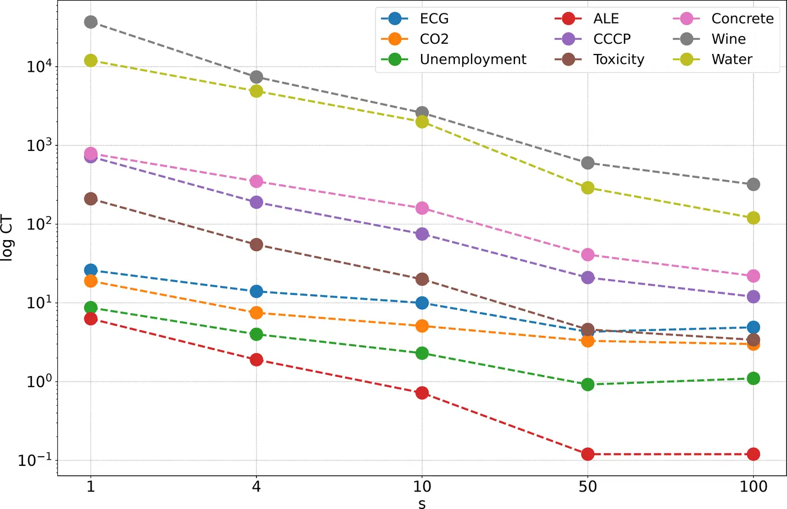
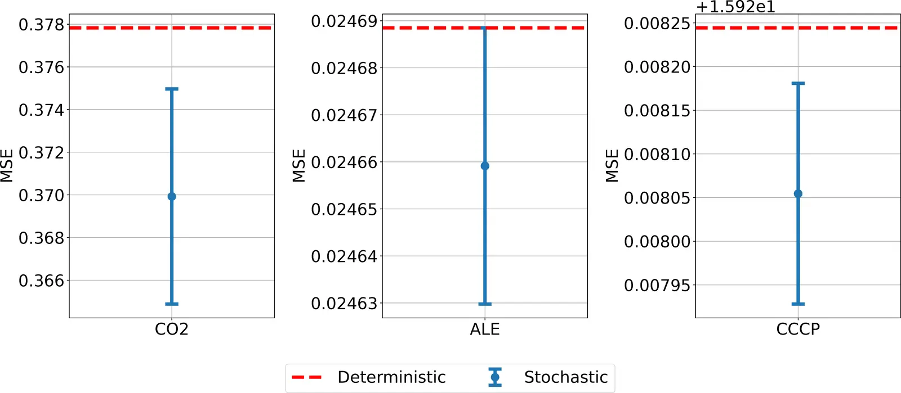
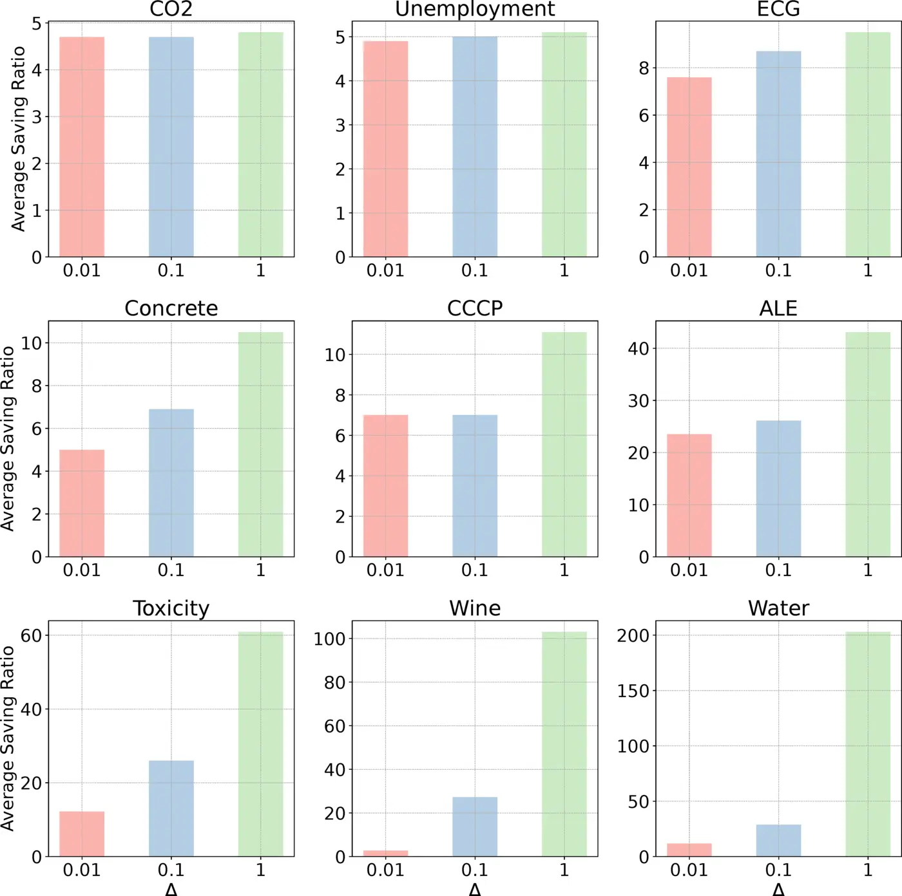

IEEE TNNLS, 2025
Sparsity-Aware Distributed Learning for Gaussian Processes with Linear Multiple Kernel
TL;DR. Hyperparameters of the GSM kernel come out sparse. SLIM-KL uses that sparsity, plus quantized ADMM, so many agents can train a large GP kernel privately and with less communication.
Abstract
Gaussian processes (GPs) stand as crucial tools in machine learning and signal processing, with their effectiveness hinging on kernel design and hyper-parameter optimization. This paper presents a novel GP linear multiple kernel (LMK) and a generic sparsity-aware distributed learning framework to optimize the hyper-parameters. The newly proposed grid spectral mixture (GSM) kernel is tailored for multi-dimensional data, effectively reducing the number of hyper-parameters while maintaining good approximation capabilities. We further demonstrate that the associated hyper-parameter optimization of this kernel yields sparse solutions. To exploit the inherent sparsity property of the solutions, we introduce the Sparse LInear Multiple Kernel Learning (SLIM-KL) framework. The framework incorporates a quantized alternating direction method of multipliers (ADMM) scheme for collaborative learning among multiple agents, where the local optimization problem is solved using a distributed successive convex approximation (DSCA) algorithm. SLIM-KL effectively manages large-scale hyper-parameter optimization for the proposed kernel, simultaneously ensuring data privacy and minimizing communication costs. Theoretical analysis establishes convergence guarantees for the learning framework, while experiments on diverse datasets demonstrate the superior prediction performance and efficiency of our proposed methods.
The GSMP Kernel and Why Its Hyperparameters Are Sparse
GP regression models an unknown function with a covariance kernel 1. The grid spectral mixture (GSM) kernel 2 approximates any stationary kernel's spectral density with a Gaussian mixture whose means and variances are fixed to preselected grid points, leaving only the mixture weights to be optimized. This turns the GSM kernel into a linear multiple kernel (LMK): a weighted sum of one-dimensional sub-kernels. The GSM kernel was designed for one-dimensional inputs. Extending it naively to P-dimensional data by fixing grid points in ℝP makes the number of components grow exponentially with Pa, which the authors' own earlier work on a multi-dimensional GSM kernel 3 already ran into.
This paper's grid spectral mixture product (GSMP) kernel avoids that blow-up by taking the product of one-dimensional sub-kernels across dimensions, rather than fixing grid points directly in the joint input space, while still using only Q weights. The resulting spectral density is itself a Gaussian mixture, so GSMP retains the universal approximation property of the original GSM and spectral mixture (SM) kernels4. In a two-dimensional worked example, GSMP's spectral density covers the same modes as the earlier grid-based GSM kernel plus additional ones lying along the main diagonal that GSM structurally cannot reach, and this gap widens with dimension P, so GSMP reaches the same expressiveness with far fewer hyperparameters.
Fitting the GSM/GSMP weights means minimizing the negative log marginal likelihood, a difference-of-convex (DC) program solved by successive convex approximation (SCA)6: at each step, a convex surrogate from a first-order Taylor expansion of the concave part is minimized with an off-the-shelf convex solver7. This paper proves every local minimum of this problem for the GSMP kernel is sparse, with or without observation noise, so only a handful of sub-kernels end up with non-negligible weight. Centralized SCA still scales as O(Qn3) and needs the whole dataset in one place at every iteration, which is impractical for large or privacy-sensitive data.
Sparsity-Aware Distributed Learning (SLIM-KL)

Figure 1. The proposed Sparse Linear Multiple Kernel Learning (SLIM-KL) framework, featuring a quantized ADMM scheme for collaborative hyperparameter learning across multiple agents, and a distributed SCA algorithm for local optimization using multi-core computing units.
SLIM-KL splits the dataset across N agents, each holding a local shard, and asks them to agree on a shared set of GSMP weights without pooling their data. It builds on ADMM8, but quantizes every transmitted value with a stochastic quantizer9 that rounds each weight up or down with probability proportional to its distance from the nearest grid point, keeping the quantized value unbiased in expectation. Each round has agents average their quantized local weights into a global estimate, broadcast it, then re-optimize their own local weights against it before updating their dual variable. Because quantization rounds many already-small GSMP weights to exactly zero, it reinforces rather than fights the kernel's sparsity, which the paper argues can also help steer agents away from poor local minimab.
The local subproblem each agent solves at every ADMM round is itself non-convex and non-separable across weights, so solving it directly does not scale to large Q. The distributed SCA (DSCA) algorithm splits an agent's weights into s blocks, builds one convex surrogate per block from the same Taylor-expansion trick as centralized SCA, and optimizes all s blocks in parallel on separate computing units. Each block's surrogate is reformulated as a second-order cone program so it can be solved efficiently with MOSEK 7 rather than a generic convex solver. Splitting the work this way reduces the per-iteration computational complexity of hyperparameter optimization from O(Qn3) to O(Qn3/(sN3)), so adding agents and computing units directly cuts the cost of training a large number of hyperparameters.
The local subproblem each agent solves at every round is itself non-convex and non-separable across weights, so the distributed SCA (DSCA) algorithm splits an agent's weights into s blocks, builds one convex surrogate per block, and optimizes all s blocks in parallel on separate computing units, each reformulated as a second-order cone program solved with MOSEK7. This cuts the per-iteration cost of hyperparameter optimization from O(Qn3) to O(Qn3/(sN3)), so adding agents and computing units directly cuts the cost of training a large number of hyperparameters.
Experiments
All experiments use MATLAB with MOSEK 7 as the convex solver. Code and data are available in the paper's repository.
Approximation capability of the GSMP kernel
On synthetic two-dimensional data generated from an SM-kernel GP with a known spectral density, the GSMP kernel is compared against the earlier multi-dimensional GSM kernel 3 across five spectral-density configurations, using Q = 50 grid points for both. When the ground-truth density's modes lie on the main diagonal, the grid-based GSM kernel cannot represent them and its GP prediction MSE is far worse than the GSMP kernel's, for example 0.9431 versus 0.3769 in one configuration. When the modes instead lie on the anti-diagonal, a direction the GSM kernel's fixed grid already supports, the two kernels perform comparably, with GSM sometimes slightly ahead. The GSMP kernel matches or beats the GSM kernel's prediction accuracy in most configurations without requiring any additional grid points.

Figure 2. The learned spectral density of the multi-dimensional GSM kernel (left) versus the learned spectral density of the GSMP kernel (right), for two of the paper's five spectral-density configurations. The cross symbols represent the modes of the ground truth.
Prediction performance on real datasets
The GSMP-kernel GP trained with SLIM-KL (s = 4 computing units, N = 2 agents, quantization resolution Δ = 0.01) is compared on nine real datasets, spanning input dimension 1 to 11, against the original GSM-kernel GP 3, an SM-kernel GP 4, a sparse spectrum GP (SSGP) 5, a squared-exponential GP 1, an LSTM 10, and the Informer Transformer forecaster 11. GSMPGP achieves the lowest prediction MSE on every one of the nine datasets, and its solutions stay sparse (typically well under 5% of weights nonzero) at accuracy comparable to or better than the also-sparse GSMGP baseline, while the dense SMGP baseline needs 100% of its weights and still trails both. The improvement is largest on the multi-dimensional datasets, consistent with the approximation-capability results above.
Scalability across agents and computing units
Varying the number of DSCA computing units s ∈ {1, 4, 10, 50, 100} shows prediction MSE does not consistently worsen as s grows, and for several datasets more computing units even improves it, while computation time drops sharply as s increases, matching the O(Qn3/(sN3)) complexity bound. Varying the number of agents N ∈ {2, 4, 8, 10} against a centralized baseline, SLIM-KL with a moderate number of agents (N = 2) matches or beats the centralized case on nearly every dataset, but performance degrades once N grows large relative to a dataset's size, since each agent then has too little local data to train on. On a version of the CCCP dataset enlarged to 9,500 training points, SLIM-KL (N = 10, s = 4) keeps the same prediction MSE as the smaller version, showing it scales to substantially larger data.

Figure 3. Total computation time (in log-scale) for one computing unit, with respect to different values of s.
Effect of quantization on communication cost
Stochastic quantization is compared against deterministic quantization at Δ = 0.01, repeating each run 5 times. Stochastic quantization achieves a consistently lower mean prediction MSE than deterministic quantization, with its error bars (±2 standard deviations) showing the variability stays bounded.

Figure 4. Performance comparison of SLIM-KL under stochastic quantization versus deterministic quantization, with Δ = 0.01. The blue dots with vertical error bars indicate the mean MSE plus or minus two standard deviations when using stochastic quantization, while the red dashed lines represent the MSE when using deterministic quantization.
Sweeping the quantization resolution Δ ∈ {0.001, 0.01, 0.1, 1, 5} against no quantization at all shows quantization does not necessarily hurt accuracy: on the CO2 dataset, Δ = 1 gives the lowest MSE of any setting while cutting transmitted bits by 4.8× on average, and on the Water dataset quantization saves communication by more than 200× while keeping prediction MSE essentially unchanged. Coarser resolutions eventually do degrade accuracy on some datasets (for example ECG at Δ = 5), so the paper reports Δ = 0.1 as a practical balance between communication savings and prediction performance.

Figure 5. Average saving ratio in transmitting the local hyperparameters when using quantization versus without quantization, with respect to different quantization resolutions Δ.
Long time series forecasting
On five larger-scale forecasting benchmarks (Weather and four ETT datasets), SLIM-KL is scaled up to s = 100 computing units and N = 100 agents with Δ = 0.01, and compared against recent Transformer- and RNN-based forecasters: SegRNN 12, PatchTST 13, MICN 14, and TiDE 15. GSMPGP finishes in the top two on four of the five datasets and first on two of them (ETTh1 and ETTm1), while remaining competitive on Weather where it trails the best model only slightly. Against distributed and random-feature multiple-kernel-learning baselines, DOMKL 16 and CoKle/BoKle 17, SLIM-KL gets the lowest MSE on all five datasets, showing that scaling to 100 agents does not come at the cost of accuracy.
Open Question
Hyperparameter optimization for this kernel yields sparse weights, which quantized ADMM then exploits, shrinking communication and, in principle, the model class the predictor uses. Deriving whether those zeros improve prediction, or mainly cut communication while leaving the same function class, remains open.
Citation
@article{suwandi2023gaussian,
title={Sparsity-Aware Distributed Learning for Gaussian Processes with Linear Multiple Kernel},
author={Suwandi, Richard Cornelius and Lin, Zhidi and Yin, Feng and Wang, Zhiguo and Theodoridis, Sergios},
journal={IEEE Transactions on Neural Networks and Learning Systems},
year={2025}
}Footnotes
- For a ten-dimensional dataset with 100 grid points per dimension, the original GSM kernel's naive multi-dimensional extension would need Q = 100^10 = 10^20 components, which is computationally infeasible. [↩]
- If one agent's local optimizer gets stuck at a poor local minimum of the non-convex GSMP hyperparameter problem, the ADMM consensus step can pull it toward a more reasonable starting point on the next iteration. [↩]
References
- Gaussian Processes for Machine Learning [PDF]
Rasmussen, C.E. and Williams, C.K.I., 2006. MIT Press. - Linear Multiple Low-Rank Kernel Based Stationary Gaussian Processes Regression for Time Series
Yin, F., Pan, L., Chen, T., Theodoridis, S., Luo, Z.Q.T. and Zoubir, A.M., 2020. IEEE Transactions on Signal Processing, 68, pp.5260-5275. DOI: 10.1109/TSP.2020.3023008 - Gaussian Process Regression with Grid Spectral Mixture Kernel: Distributed Learning for Multidimensional Data
Suwandi, R.C., Lin, Z., Sun, Y., Wang, Z., Cheng, L. and Yin, F., 2022. Proc. Int. Conf. Inf. Fusion (FUSION). DOI: 10.23919/FUSION49751.2022.9841347 - Gaussian Process Kernels for Pattern Discovery and Extrapolation [PDF]
Wilson, A.G. and Adams, R.P., 2013. Proc. Int. Conf. Mach. Learn. (ICML). - Sparse Spectrum Gaussian Process Regression
Lázaro-Gredilla, M., Quinonero-Candela, J., Rasmussen, C.E. and Figueiras-Vidal, A.R., 2010. Journal of Machine Learning Research, 11, pp.1865-1881. - Parallel and Distributed Successive Convex Approximation Methods for Big-Data Optimization
Scutari, G. and Sun, Y., 2018. Multi-Agent Optimization, pp.141-308. Springer. - The MOSEK Optimization Toolbox for MATLAB Manual, Version 10.0
MOSEK ApS, 2022. - Distributed Optimization and Statistical Learning via the Alternating Direction Method of Multipliers
Boyd, S., Parikh, N., Chu, E., Peleato, B. and Eckstein, J., 2011. Foundations and Trends in Machine Learning, 3(1), pp.1-122. DOI: 10.1561/2200000016 - Quantized Consensus by the ADMM: Probabilistic versus Deterministic Quantizers
Zhu, S. and Chen, B., 2016. IEEE Transactions on Signal Processing, 64(7), pp.1700-1713. DOI: 10.1109/TSP.2015.2504341 - Long Short-Term Memory
Hochreiter, S. and Schmidhuber, J., 1997. Neural Computation, 9(8), pp.1735-1780. DOI: 10.1162/neco.1997.9.8.1735 - Informer: Beyond Efficient Transformer for Long Sequence Time-Series Forecasting
Zhou, H., Zhang, S., Peng, J., Zhang, S., Li, J., Xiong, H. and Zhang, W., 2021. Proc. AAAI Conf. Artif. Intell. (AAAI), pp.11106-11115. - SegRNN: Segment Recurrent Neural Network for Long-Term Time Series Forecasting [PDF]
Lin, S., Lin, W., Wu, W., Zhao, F., Mo, R. and Zhang, H., 2023. arXiv:2308.11200. - A Time Series is Worth 64 Words: Long-term Forecasting with Transformers
Nie, Y., Nguyen, N.H., Sinthong, P. and Kalagnanam, J., 2023. Proc. Int. Conf. Learn. Represent. (ICLR). - MICN: Multi-scale Local and Global Context Modeling for Long-term Series Forecasting
Wang, H., Peng, J., Huang, F., Wang, J., Chen, J. and Xiao, Y., 2023. Proc. Int. Conf. Learn. Represent. (ICLR). - Long-term Forecasting with TiDE: Time-series Dense Encoder
Das, A., Kong, W., Leach, A., Mathur, S., Sen, R. and Yu, R., 2023. Transactions on Machine Learning Research. - Distributed Online Learning With Multiple Kernels
Hong, S. and Chae, J., 2023. IEEE Transactions on Neural Networks and Learning Systems, 34(3), pp.1263-1277. DOI: 10.1109/TNNLS.2021.3105146 - Online Multikernel Learning Method via Online Biconvex Optimization
Hong, S., 2024. IEEE Transactions on Neural Networks and Learning Systems, 35(11), pp.16630-16643. DOI: 10.1109/TNNLS.2023.3296895